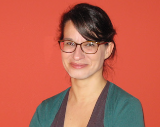

Sara Vieira-Silva
University Medical Center, Johannes Gutenberg University Mainz
Institute of Medical Microbiology and Hygiene
Gebäude 905
Obere Zahlbacher Strasse 67
55101 Mainz
Germany
Sara Vieira-Silva is an associate Professor and Group Leader at the IMMH, University Medical Center, JGU Mainz and Adjunct Director at the Institute of Molecular Biology, Mainz.
Initially trained in biology (University of Lisbon, Portugal) and computational biology (PDBC, IGC, Portugal), she conducted a PhD thesis in microbial evolutionary genomics (UPMC), supervised by Eduardo Rocha at Institut Pasteur, Paris, France.
As a postdoctoral scientist (VIB / KU Leuven), she specialized in studying microbial metabolism specific to the human gut environment and its clinical impact on the human host; embracing and developing state-of-the art computational approaches to study these microbial communities.
Our lab explores the ecology of host-associated microbial communities and their role in health and disease. Our research focuses on understanding the ecological dynamics of human gut-associated microbial communities in healthy host-microbiome homeostasis and how their disturbance contributes to the risk of disease onset or progression. We apply quantitative approaches to population cohort studies and intervention trials to identify the mechanisms that drive the dynamics of the gut ecosystem in health, the determinants of its resilience to perturbations and the alterations that contribute to disease (dysbiosis). We base our research on dataset generated by hypothesis-driven experimental design, and invest in the continuous development of bioinformatic tools to extract interpretable traits from metagenomic data as well as computational approaches to quantify ecological dynamics and host-microbiome interactions.
In close collaboration with clinical experts, we are engaged in dissecting the contribution of microbiomes to pathophysiology, with the aim of refining personalized therapeutic approaches for inflammatory, metabolic and neuropsychiatric disorders. For this purpose, we partner with large multidisciplinary consortia
Outstanding Women Academics, AcademiaNet view
Highly Cited Researchers, Clarivate Analytics view
Triennial award for biomedical research 2019-2021, Antoine Faes Foundation view
Best clinical article award 2017, Belgian society of Internal Medicine view
Vieira-Silva S*, Falony G*, Belda E*, (...), Clément K & Raes J. (2020) Statin therapy is associated with lower prevalence of gut microbiota dysbiosis. Nature 581:310-315. view
Vieira-Silva S*, Sabino J*, Valles-Colomer M*, Falony G*, (...), Vermeire S & Raes J. (2019) Quantitative microbiome profiling disentangles inflammation- and bile duct obstruction-associated microbiota alterations across IBD/PSC diagnoses. Nat. Microbiol. 4(11), 1826-1831. view
Valles-Colomer M, Falony G, (...), Vieira-Silva S* & Raes J*. (2019) The neuroactive potential of the human gut microbiota in quality of life and depression. Nat. Microbiol. 4, 623–632 view [*co-senior]
Vandeputte D*, Kathagen G*, D’hoe K*, Vieira-Silva S*, Valles-Colomer M, (...), Vermeire S, Falony G* & Raes J*. (2017) Quantitative microbiome profiling links gut community variation to microbial load. Nature 551, 507–511 view
Vieira-Silva S*, Falony G*, Darzi Y, et al. (2016) Species-function relationships shape ecological properties of the human gut microbiome. Nat. Microbiol. 1, 16088 view
Falony G*, Joossens M*, Vieira-Silva S*, Wang J*, Darzi Y, et al. (2016) Population-level analysis of gut microbiome variation. Science 352, 560–4 view
Full publication list: ORCID profile